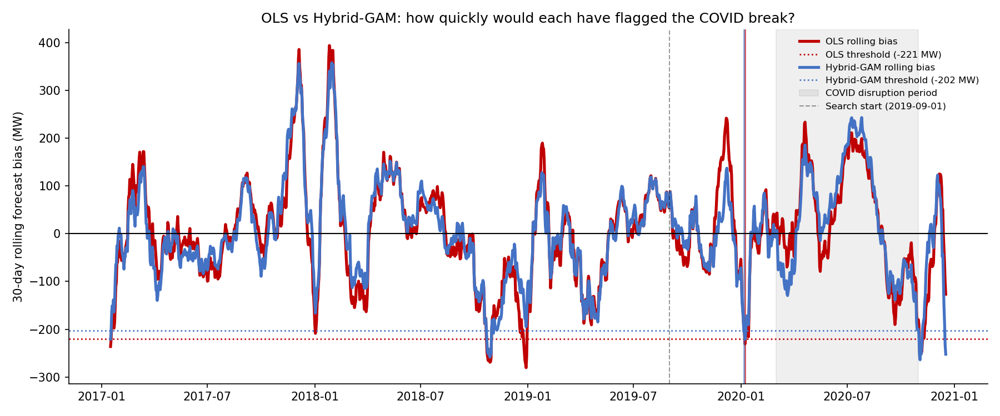
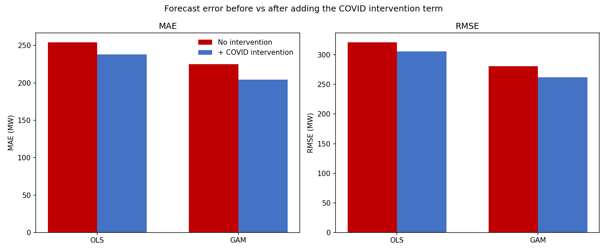

Reacting to an Exogenous Shock Mid-Forecast: A Demo Model with AEMO Electricity Demand Data
Overview
Every demand forecast leans on one assumption: that the relationship you fit on past data still holds across the horizon you’re forecasting. COVID-19 broke that assumption for almost everyone. It was a textbook exogenous shock: it arrived mid-forecast and pulled actual demand away from anything a pre-2020 model would have predicted.
This is a self-contained demo built on public AEMO operational demand data for Victoria. It asks one narrow question: when your forecast experiences a shock mid-flight, will you know something strange is occurring? How? And how soon?
Spoiler: the shock that first disrupted 2020 energy demand forecasts wasn’t COVID.

Check out the full notebook on GitHub.
Method
The setup is small enough to read end to end, but it mirrors how AEMO predicts and stress-tests medium-to-long term operational demand.
- Data. AEMO operational demand for Victoria, paired with observed weather over the same period, from the beginning of 2017 to the end of 2022. The train set is 2017-2019; the test set is 2020-2022. A true energy demand forecast would draw on more granular time and weather data, plus a bevy of techno-economic variables — this is a bite-sized example dataset.
- Two modelling approaches, one question. An Ordinary Least Squares model with a linear temperature response serves as the baseline. OLS measures how an outcome — here, energy demand — reacts linearly to a set of parameters — time and weather. The alternative is a hybrid OLS-GAM: the OLS component still explains time effects linearly, while the GAM (Generalized Additive Model) lets temperature have a nonlinear relationship with demand, so long as that relationship follows a smooth curve. The aim was to separate two things that are easy to conflate — a misspecified weather response and a genuine structural shock.
- Uncertainty, the way operators use it. Each model produces POE10 / POE50 / POE90 bands — the demand levels exceeded 10%, 50%, and 90% of the time — built by resampling historical weather years through the fitted model. With a larger training set, this would let you pinpoint the probability of exceeding a given demand level, the same way AEMO frames its own forecasts.
- Detecting the break. A structural-break test over the demand series handles the detection half of the question: if you were watching this unfold in real time, when would the data first tell you something had changed — and would it tell you what?
- Accounting for that break. How do you tell your model that something unusual is occurring? The most direct way is to give it that information explicitly, as a column that says “Yes, COVID lockdowns are happening” or “No, COVID lockdowns are not happening.” This Yes/No data is integrated into the models as a fixed effect.
Results
The first break wasn’t COVID. Run break detection over the series and the earliest structural break doesn’t land in March 2020 — it lands months earlier, in the Black Summer bushfire window over the 2019-20 summer. The obvious shock wasn’t the first one. It’s a useful reminder that “the data changed” and “the thing I was worried about happened” are different statements: detection tells you that something shifted, not what.
The nonlinear fix beat the COVID fix. Across the three models, adding an explicit COVID intervention term helped less than simply switching to a nonlinear temperature response. Much of what looked like a COVID anomaly under OLS was really the linear model failing to capture the curve of the temperature-demand relationship at the extremes. Once the GAM handled that, the leftover “COVID effect” shrank substantially.

Check how much the error bars decrease — the difference between the red bar and the blue bar is the degree to which accounting for COVID makes the models better.
The two findings make one practical point: when a shock looks like it’s breaking your forecast, check your functional form before you reach for a special-case term. The dummy you add to “fix COVID” may be quietly compensating for a model that was misspecified the whole time.